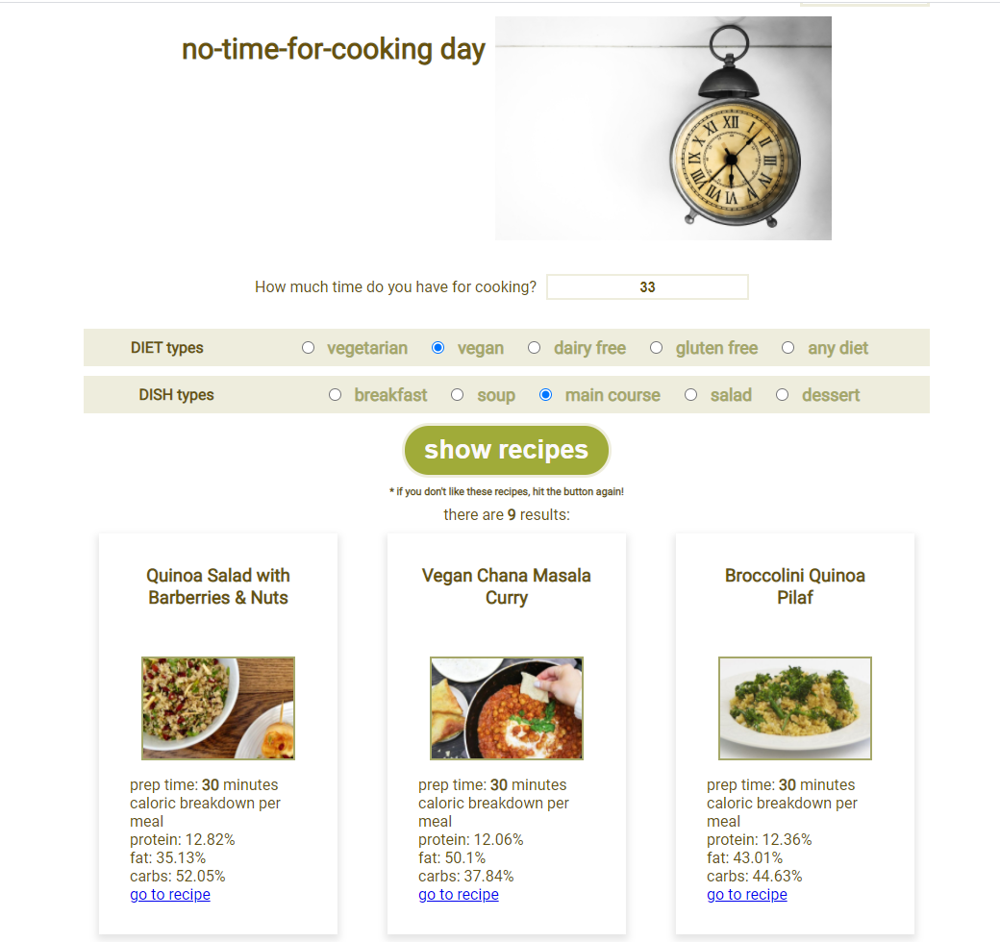

Een applicatie om recepten snel en makkelijk te zoeken aangepast aan je activiteiten en volgens de dynamiek van de dag. Op basis van 4 categorieën kan de gebruiker recepten zoeken.
Hier kan je een voorbeeld zien van de No-time-for-cooking day hoe een categorie werkt. De gebruiker kan op basis van de aangegeven tijd recepten laten zoeken. In alle categorieen is het mogelijk om een selectie te maken van diet types en in deze categorie ook nog van dish types:
Resultaat:

Nep database server: https://github.com/hogeschoolnovi/frontend-fake-server.git
API-key Eigen API-key bij Spoonacular. Je moet jezelf aan te melden bij https://spoonacular.com/food-api Spoonacular.
Het project is opgezet met Create React App.
De applicatie starten Wanneer je een project van iemand anders opent, draai je altijd eerst een globale installatie:
'npm install'
Hiermee haal je alle dependencies van het project binnen.
We willen dat React onze JavaScript XML in het HTML bestand injecteert, zodat de browser dit kan interpreteren en een webpagina laat zien. Dit doen we door het universele npm commando te gebruiken in de terminal van jouw IDE (of via de UI van Webstorm):
'npm start'
De applicatie zal nu automatisch openen in jouw browser op het adres http://localhost:3000/.
Authenticatie Om dit project met authenticatie te kunnen gebruiken, heb ik gebruik gemaakt van de nepserver van NOVI. De nepserver draait apart van het 'food operator' frontend project. Nep database server: https://github.com/hogeschoolnovi/frontend-fake-server.git Voor je de server kunt gebruiken zul je de de dependencies moeten installeren met het commando:
'npm install'
Er is een speciaal script aangemaakt om deze server te runnen. Het letterlijke script kun je terugvinden in de package.json. Om de server te starten hoef je slechts het volgende commando in jouw terminal in te voeren:
'npm run json:server'
Deze server draait op http://localhost:3000, wanneer je dit in de browser opent zul je alle beschikbare endpoints zien verschijnen. Let op: omdat deze server op localhost:3000 draait is het belangrijk deze server te starten voor je een React-project start. React zal dan automatisch vragen om dat project op een andere port te draaien.
API-key Om deze app te kunnen gebruiken, heb je een API-key nodig. Deze kun je gemakkelijk verkrijgen door jezelf aan te melden bij Spoonacular. Doe dat via de volgende link: https://spoonacular.com/food-api
De gebruiker kan de applicatie gebruiken door een registratie te maken en vervolgens inloggen met eigen account.
Forms Om react-hook-form te kunnen gebruiken moeten we eerst installeren in het project. Typ daarom het volgende in jouw terminal:
'npm install react-hook-form'
Routing Routing omvat alles dat nodig is om de gebruikers op de juiste pagina, met de juiste content te krijgen. Je moet in de terminal openen en react-router installeren:
'npm install react-router-dom'
http request maken
Door middel van een specifieke url gegevens kunnen recepten opvragen: er wordt een GET-request gemaakt naar de Spoonacular API.
De library Axios hiervoor is handig om te gebruiken. We kunnen hierdoor de variabele axios gebruiken als basis om de verschillende functies die deze library beschikbaar heeft gesteld, te gebruiken.
Download Axios door het volgende in de terminal te typen:
'npm install axios'
JWT-token We hebben hier de JWT token nodig om daaruit de userID te halen Hier gebruiken we de package jwt-decode voor:
'npm install jwt-decode'
React icons library Er wordt gebruik gemaakt van de React icons library, die kan je installeren om de volgende in de terminal te typen:
'npm install react-icons'